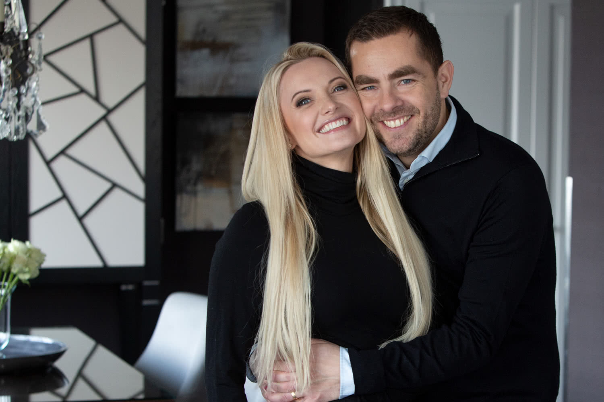
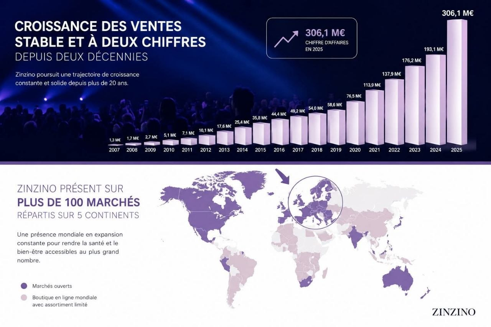
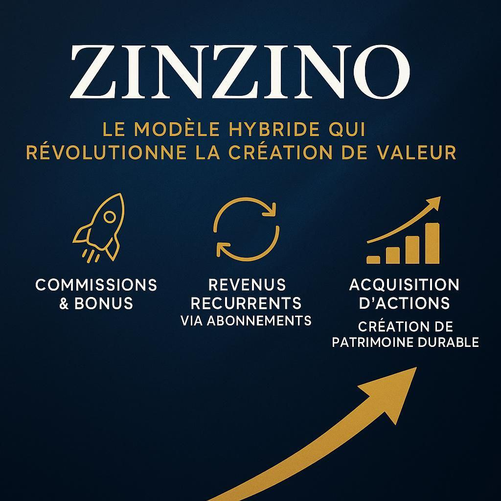

Mon parcours
te présente, en toute transparence, l'entreprise avec laquelle nous travaillons.
Présentation recommandée par
Une question ? Écris-moi sur WhatsApp- 1L'idée générale
- 2L'entreprise
- 3Démarrer
Depuis 2005
Une entreprise scandinave née d'une conviction simple.
Quand on donne aux personnes des outils fiables pour comprendre leur corps, elles peuvent faire des choix plus éclairés.
Fondée par Hilde et Ørjan Sæle
Analyses indépendantes avec Vitas
Plus de 100 marchés
Cotée en Bourse
Business For Home :
Vision, mission, valeurs
Une entreprise née d'une conviction de fondateurs.
Les entrepreneurs norvégiens Hilde et Ørjan Sæle ont construit Zinzino autour d'une idée forte : remettre la relation client au cœur de l'entreprise, avec des outils sérieux et une vision internationale.

Les fondateurs
Hilde et Ørjan Sæle
Depuis 2005, ils défendent une approche plus personnelle de la santé : moins d'approximation, plus de mesure, et une relation client suivie dans le temps.
Photo officielle Zinzino.
Une vision
“Inspire Change in Life” : inspirer un changement réel, dans la santé, les habitudes et parfois la trajectoire professionnelle.
Une mission
Devenir une entreprise centrée client, où l'expérience, le suivi et la confiance comptent autant que les produits.
Une culture
Les partenaires ne sont pas de simples intermédiaires : ils portent l'information, expliquent le concept et restent présents dans le parcours.
Client ou partenaire : les mêmes tarifs pour tous.
En abonnement, que l'on soit client ou partenaire, chacun bénéficie exactement des mêmes tarifs. Le partenaire n'achète pas pour revendre : chacun commande directement auprès de l'entreprise, au même prix.
Seul l'achat d'un produit au détail, hors abonnement, se fait à un tarif plus élevé.
Évolution
D'une aventure scandinave à une entreprise internationale.
Zinzino n'est pas apparue comme une mode. L'entreprise s'est construite étape après étape : relation client, nutrition personnalisée, expansion internationale et informations publiques.
Le départ avec Hilde et Ørjan Sæle
Une entreprise familiale norvégienne démarre avec une ambition : mettre la relation client au centre.
Le virage vers la nutrition personnalisée
L'entreprise développe progressivement une approche basée sur les tests et la personnalisation.
Une société cotée et plus transparente
Zinzino entre sur Nasdaq First North, ce qui renforce l'accès aux informations publiques sur l'entreprise.
20 ans, plus de 100 marchés et une croissance de 51 % en 2025
Le chiffre d'affaires 2025 atteint 3,3 milliards de couronnes suédoises (environ 306 M€).
Solidité financière
Une entreprise solide, aux comptes publics.
Être cotée en Bourse oblige à publier ses résultats : chacun peut vérifier la santé de l'entreprise.
306 M€de chiffre d'affaires en 2025
+51 %de croissance en 2025
2014cotée sur Nasdaq First North
100+marchés dans le monde

Source : rapport de fin d'année 2025 publié par Zinzino AB (chiffre d'affaires : 3 337,5 millions de couronnes suédoises).
Un regard extérieur
Reconnue par un observateur indépendant.
Business For Home suit et classe des centaines d'entreprises dans le monde entier. Zinzino y figure parmi les entreprises suivies de près.
note attribuée par Business For Home
au classement « Momentum » des entreprises en plus forte dynamique
Source : businessforhome.org, fiche Zinzino, consultée en . Les classements évoluent régulièrement.
Le concept
Mesurer pour personnaliser.
Zinzino ne repose pas sur un seul test. L'idée est de mesurer où tu en es dans plusieurs domaines de la santé cellulaire, puis de mettre en place une routine et de comparer l'évolution ensuite.
- ✓Quatre autotests à domicile aujourd'hui : BalanceTest (acides gras et rapport oméga-6/oméga-3), vitamine D, santé intestinale et HbA1c (équilibre glycémique).
- ✓Des résultats qui aident à comprendre différents marqueurs de santé cellulaire.
- ✓Une routine nutritionnelle proposée selon les résultats des tests et ce que la personne souhaite améliorer.
- ✓Un retest pour comparer l'évolution au lieu de rester sur une impression.
tests analysés dans le monde, tous tests confondus.
BalanceTest (acides gras)
tests de vitamine D
tests HbA1c
tests de santé intestinale, depuis
des BalanceTest de référence présentaient un déséquilibre. Source : compteurs zinzinotest.com, .
Ce qui rend l'approche différente
La preuve avant le discours.
L'idée forte de Zinzino est simple : ne pas demander aux personnes de croire, mais leur proposer de mesurer, d'agir, puis de comparer.
Philosophie produit et qualité
Une exigence qui rassure.
La confiance se construit sur des éléments vérifiables : des analyses indépendantes, des tests anonymes, une production structurée, des contrôles qualité et une entreprise cotée.
Les analyses ne sont pas réalisées par Zinzino.
Pour les tests concernés, les échantillons sont gérés et analysés anonymement par Vitas, un laboratoire indépendant d'analyse chimique basé à Oslo, certifié GMP.
Ni le laboratoire, ni Zinzino ne travaillent avec le nom de la personne : le résultat est relié à un identifiant de test.
Autotests à domicile
Une démarche simple, réalisée chez soi, pour obtenir une base personnelle.
Routine personnalisée
Des produits choisis selon le point de départ et l'objectif d'amélioration.
Vision long terme
Une société cotée, avec des informations publiques, capable d'intégrer des réseaux et des technologies qui renforcent sa mission.
Des technologies au service d'une nutrition plus propre
Zinzino ne développe pas seulement un réseau international. L'entreprise peut aussi s'associer à des entreprises qui apportent une vraie avancée technologique, comme les systèmes de photobioréacteurs pour cultiver des microalgues dans un environnement contrôlé.
L'objectif reste le même : sécuriser des matières premières de qualité, limiter l'exposition aux pollutions extérieures et préparer les solutions nutritionnelles de demain.
Des tests qui font aussi avancer la recherche.
Les résultats anonymes des BalanceTest forment une base de données mondiale sur les acides gras dans le sang. En 2025, une étude portant sur près de 600 000 tests, menée par l'équipe de recherche de Zinzino, son conseil scientifique et le laboratoire indépendant Vitas, a été publiée dans la revue scientifique Lipids in Health and Disease.
Ses conclusions : des niveaux d'oméga-3 insuffisants et un rapport oméga-6/oméga-3 déséquilibré dans toutes les régions du monde, y compris chez de nombreuses personnes qui prennent déjà des compléments. D'où l'intérêt de mesurer plutôt que de supposer.
Au-delà de la supplémentation, ces données à grande échelle permettent aussi d'étudier l'influence de l'alimentation et des habitudes de vie.
Torrissen M. et al., Lipids in Health and Disease, 2025 — 595 480 échantillons analysés entre 2012 et 2023.
Ambassadeurs de marque
Des sportifs de haut niveau qui mesurent avant de choisir.
Zinzino accompagne plus de 90 sportifs et équipes ambassadeurs dans le monde. Comme tous les clients, ils font leurs tests, suivent leurs résultats et choisissent leur routine en fonction.
« Tous les quelques mois, je fais un BalanceTest pour savoir où j'en suis. Je préfère savoir que deviner. »
Tom Chilton, pilote automobile (Royaume-Uni), 19 victoires en championnat britannique de voitures de tourisme. Propos traduits de l'anglais.
Quelques ambassadeurs français
Noë Pottier
Parachutisme · France
Double champion du monde de parachutisme, vainqueur de Coupe du monde et champion d'Europe, membre de l'équipe de France de freefly.
Marion Chevrier
Ski alpin · France
Championne de France de slalom 2021, 10e aux Championnats du monde 2025, meilleur résultat français.
Kady Baradji
Fitness · France
Triple Miss Fitness France, coach sportive et professeure d'éducation physique.
Laurie Lubbe
Parachutisme indoor · France
Double championne de France de freestyle indoor, membre de l'équipe de France de parachutisme.
Gino Fidelin
CrossFit · Martinique
Porteur du drapeau et de la flamme pour la Martinique à Paris en 2024, premier athlète caribéen aux Championnats du monde Spartan Trifecta.
Nicolas Felger
Aventurier et conférencier · France
A relié trois continents à la nage, de l'Asie à l'Europe puis à l'Afrique, et gravi les plus hauts sommets d'Europe et d'Afrique du Nord.
Et aussi Sara Hector (ski alpin, Suède), Björn Dunkerbeck (planche à voile, Espagne), Holly Zimmermann (ultra-trail, Allemagne)… ainsi que des clubs de football, de volley-ball et de handball.
Un partenariat en produits, pas en argent
- ✓Zinzino ne rémunère pas ses ambassadeurs : le partenariat se fait uniquement en produits, dans le cadre d'un contrat.
- ✓L'objectif est une relation dans la durée, adaptée aux besoins de chaque sportif.
- ✓En échange, l'ambassadeur fait ses tests et partage ses résultats, son témoignage, des photos ou des vidéos.
- ✓Selon Zinzino, ses produits sont approuvés par Informed Sport, un programme qui contrôle l'absence de substances interdites dans les compléments.
Tu es sportif ou sportive ?
Coche ce qui te correspond :
La candidature ne se fait pas en direct : elle est présentée à Zinzino par un partenaire. Si tu remplis les conditions, je peux te mettre en relation, mais elle passe par moi : je prépare ton dossier avec toi et je le transmets. La décision appartient à Zinzino, avec une réponse sous 2 à 4 semaines si ta candidature est retenue. Toutes les candidatures ne peuvent pas être acceptées.
Activité partenaire
Plusieurs façons de grandir avec l'entreprise.
Le modèle commence souvent par l'expérience client : une personne utilise un produit, apprécie le concept, puis peut recommander autour d'elle. Chacun choisit ensuite de rester client, de développer une clientèle, une équipe, ou un équilibre des deux.
Construire une base stable
Accompagner des clients réguliers, suivre leur expérience et développer la confiance.
Faire circuler le concept
Permettre aux clients satisfaits de recommander autour d'eux, sans transformer tout le monde en partenaire.
Former si on le souhaite
Accompagner d'autres partenaires, transmettre les outils et construire une organisation.
Participer à la valeur créée
Certains bonus du plan peuvent être versés sous forme d'actions Zinzino, selon les conditions du programme.
Ce que l'activité ne demande pas
- ✓Pas de stock à gérer chez soi.
- ✓Pas d'employés, pas de local, pas de lourde structure.
- ✓Pas de logistique : l'entreprise gère les commandes, les paiements et les livraisons.
- ✓Formation offerte et accompagnement par l'équipe.
Comment un partenaire est rémunéré
- ✓Des commissions sur les commandes des clients qu'il accompagne.
- ✓Des bonus liés à l'équipe qu'il forme, s'il choisit d'en développer une.
- ✓Certains bonus pouvant être versés en actions Zinzino, selon les conditions du programme.
- ✓Le plan de rémunération officiel t'est présenté en détail à l'étape suivante.
Aucune promesse de revenu. La rémunération d'une activité partenaire est variable et dépend du temps, de la régularité, de la formation suivie et de l'action menée.

Un modèle hybride
Des commissions, une logique d'abonnements et certains bonus pouvant être liés aux actions.
Fidélité récompensée
Deux façons d'être récompensé : la recommandation et la fidélité.
Le programme Z4F (Zinzino4Free) récompense la recommandation : recommander des clients permet de recevoir des produits offerts. Le Zinzino Cash récompense la fidélité : chaque commande en abonnement alimente une cagnotte à utiliser en produits.
Z4F côté client
Un client en abonnement qui recommande le concept autour de lui peut recevoir un ou plusieurs produits offerts chaque mois, selon les conditions du programme.
Z4F côté partenaire
Un partenaire est aussi client de son propre compte : il bénéficie donc des mêmes avantages que tout client en abonnement.
En développant son activité, il peut en plus recevoir d'autres produits offerts : produits à consommer, mais aussi vêtements, roll-ups ou supports de présentation. Seuls les frais de port restent à sa charge.
Toi
Tes résultats parlent. Tu en parles naturellement à un proche.
Un proche
Il fait son test et son premier achat grâce à ta recommandation.
Tu reçois
Un ou plusieurs produits peuvent t'être offerts chaque mois, selon les conditions du programme.
À partir de 4 produits achetés par les clients que tu recommandes, tu peux recevoir un ou plusieurs produits offerts, selon les conditions du programme en vigueur.
Zinzino Cash : la fidélité récompensée
Une cagnotte qui se remplit à chaque commande en abonnement et permet d'obtenir des produits offerts.
Du 1er au 6e mois
les frais de port de chaque commande sont transformés en Zinzino Cash.
À partir du 7e mois
10 % du montant de chaque commande est transformé en Zinzino Cash.
Selon les conditions du programme en vigueur.
Écologie et humanitaire
Grandir sans oublier l'impact.
La qualité ne concerne pas seulement les produits. Elle touche aussi la façon de les produire, de les livrer, de limiter les déchets et de contribuer à des actions utiles sur le plan humain.
Livraisons espacées
Les commandes en abonnement sont souvent organisées sur un rythme tous les 2 mois, ce qui limite les envois répétés et simplifie le suivi.
Emballages et logistique
L'entreprise fait évoluer sa réflexion sur les emballages, la logistique et la réduction de ce qui n'apporte pas de valeur au client, avec une attention portée à l'impact écologique.
Engagement humanitaire
Zinzino met aussi en avant des engagements solidaires et humanitaires, dans l'idée qu'une croissance internationale doit rester reliée à l'humain.
La bonne question maintenant
Qu'est-ce qui t'attire le plus dans cette entreprise ?
Il n'y a pas de bonne ou de mauvaise réponse. Cette question permet simplement d'orienter la suite de l'échange vers ce qui t'intéresse vraiment.
Plusieurs réponses possibles.
Aucune promesse de revenu. La rémunération d'une activité partenaire est variable et dépend du temps, de la régularité, de la formation suivie et de l'action menée.